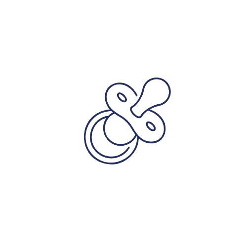

A Jornada do Soberano
Nascimento e Infância
Nasci filho de Cronos e Reia. Meu pai, temendo ser destronado por um de nós, engolia cada filho que minha mãe dava à luz. Um a um, meus irmãos desapareceram em seu estômago. Mas comigo foi diferente. Reia, já cansada do ciclo de horror, me escondeu. Entregou a Cronos uma pedra enrolada em panos e me levou às escondidas para a ilha de Creta. Lá, fui criado em uma caverna, alimentado pelo leite da cabra Amaltheia e protegido pelos Curetes — guerreiros que batiam lanças e escudos para abafar meu choro e não levantar suspeitas. Cresci em silêncio, longe do Olimpo… mas o trovão já nascia comigo.
Preparação para a Rebelião contra Cronos
A fúria por meus irmãos engolidos me queimava por dentro como relâmpago prestes a nascer. Foi então que procurei Métis, a deusa da sabedoria. Com sua ajuda, preparei a poção que faria Cronos regurgitar os que prendera, mas mesmo com meus irmãos de volta, sabíamos que não bastava. Cronos não lutava sozinho, ele tinha os Titãs ao seu lado, então guiado por Gaia, desci até o Tártaro, onde estavam aprisionados os antigos filhos dela com Urano: os Ciclopes, que tinham sido trancados por serem feios, e os Hecatônquiros, gigantes com cem braços, liberei-os e em troca, o Ciclope me presenteou com o trovão, e Hecatônquiros lutou a nosso lado. Foi aí que percebi: eu não era mais apenas um filho escondido. Eu era o novo poder. E Cronos… ele começava a sentir o tremor da mudança.
Meus Amores
Sou imortal, mas meu coração... esse já cruzou séculos em busca de beleza, paixão e poder. A mortalidade dos outros não impediu meus sentimentos. Amei a Hera, rainha do Olimpo, minha irmã e esposa. Com ela compartilho o trono — e muitas tempestades. Mas também me aproximei de mortais e imortais. Sêmele, que gerou Dionísio. Leda, mãe de Helena. Alcmene, que trouxe ao mundo Héracles. Amor, para mim, nunca foi pequeno. Cada relação moldou histórias, fundou reinos e mudou destinos. Se fui fiel? Não. Se fui verdadeiro? Sempre.
Como Vivo Atualmente
Os trovões ainda respondem à minha voz, mas o Olimpo já não é como era. Hoje, observo o mundo dos altos céus — sem interferir tanto. Os deuses foram esquecidos por muitos, mas ainda caminho entre nuvens e tempestades, mantendo a ordem quando o caos ameaça. Já não luto contra Titãs, nem disputo o trono. Luto contra o esquecimento. Contra o tempo. E mesmo que me chamem mito… eu continuo sendo Rei. Vivo em cada raio que rasga o céu, em cada liderança que se impõe com justiça, em cada história que ressurge com força. Porque Zeus, filho de Cronos, senhor dos deuses, ainda vive.